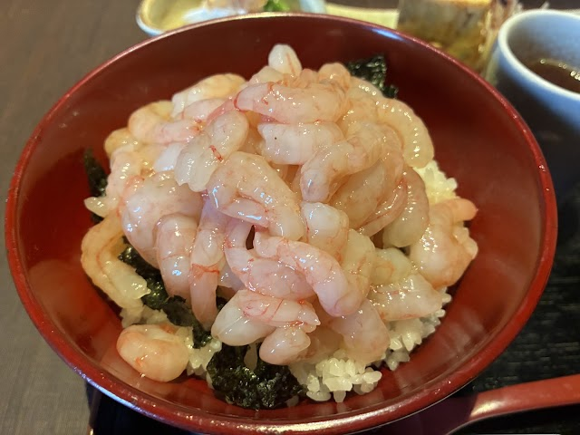
| 営業時間 | 水・木・金 11:00〜14:30 ／ 土・日 11:00〜15:00 |
|---|---|
| 定休日 | 月・火曜 |
| 住所 | 福井県坂井市三国町宿１丁目１１−１６ |
| 予約 | 可 — ☎ 0776-82-3925 ／ 公式サイト |
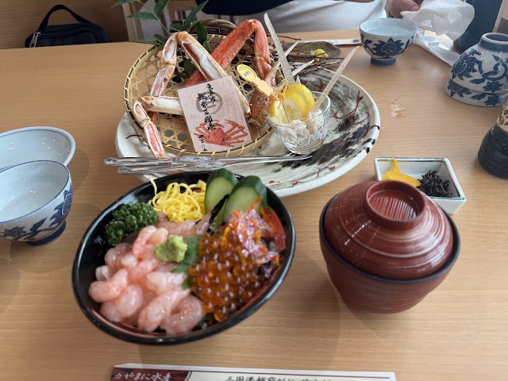
| 営業時間 | 月・火・水・木・金・土・日 8:00〜17:00 |
|---|---|
| 定休日 | なし(要最終確認) |
| 住所 | 福井県坂井市三国町安島６４−１ |
| 予約 | 要確認 — ☎ 050-5303-5412 ／ 公式サイト |
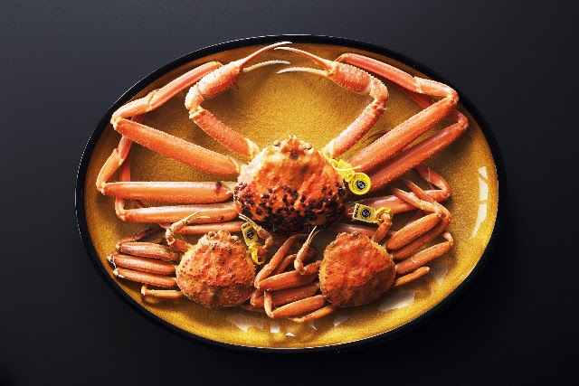
| 営業時間 | 月・火・金・土・日 11:00〜15:00, 17:30〜21:00 |
|---|---|
| 定休日 | 水・木曜 |
| 住所 | 福井県坂井市三国町宿３丁目７−２２ |
| 予約 | 可 — ☎ 050-5462-4920 ／ 公式サイト |
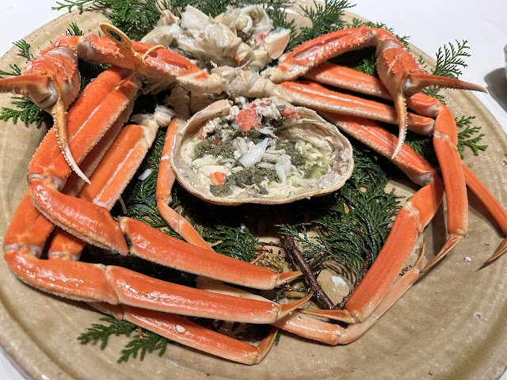
| 営業時間 | 宿泊者向けの夕食・朝食が中心（食事のみの利用可否は未確認） |
|---|---|
| 定休日 | 不定休。越前がに料理は11月6日の解禁から春先までの漁期限定 |
| 住所 | 福井県坂井市三国町米ケ脇４丁目３−３８ |
| 予約 | 要確認 — ☎ 0776-82-0067 ／ 公式サイト |
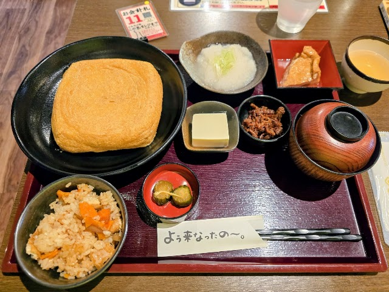
| 営業時間 | 月・水・木・金・土・日 10:30〜15:00 |
|---|---|
| 定休日 | 火曜 |
| 住所 | 福井県坂井市丸岡町上竹田３７−２６−１ |
| 予約 | 可 — ☎ 0776-67-2202 ／ 公式サイト |
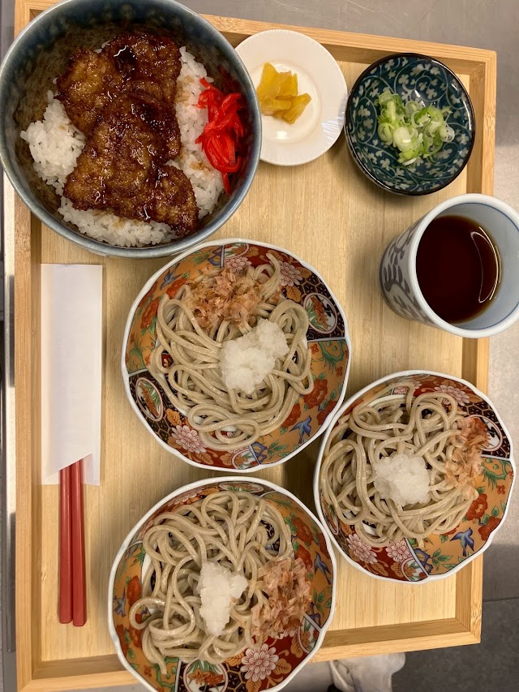
| 営業時間 | 月・水・木・金・土・日 10:30〜16:00 |
|---|---|
| 定休日 | 火曜 |
| 住所 | 福井県坂井市丸岡町霞町１丁目２６−２ |
| 予約 | 要確認 — ☎ 0776-67-1775 |
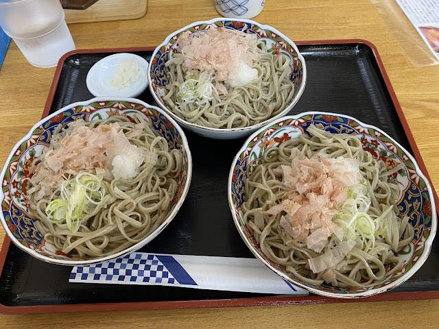
| 営業時間 | 月・火・水・土・日 11:00〜13:30 |
|---|---|
| 定休日 | 木・金曜 |
| 住所 | 福井県坂井市丸岡町小黒７３−６−６ |
| 予約 | 要確認 — ☎ 0776-68-1025 |
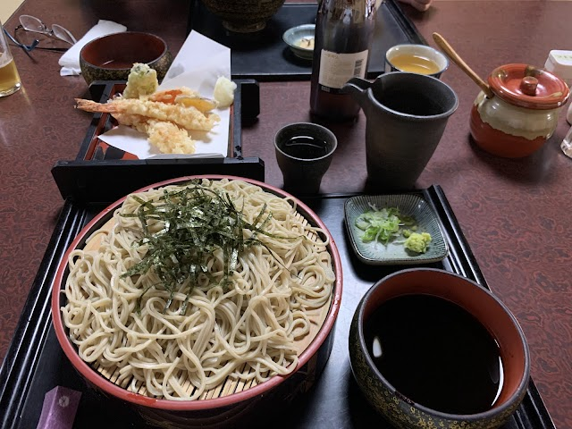
| 営業時間 | 月・火・木・金 11:00〜13:45 ／ 土・日 11:00〜13:45, 17:00〜19:00 |
|---|---|
| 定休日 | 水曜 |
| 住所 | 福井県坂井市三国町北本町３丁目２−３０ |
| 予約 | 可 — ☎ 0776-82-0405 |
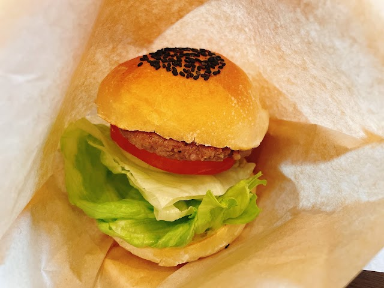
| 営業時間 | 月・火・木・土・日 10:00〜17:00 ／ 金 11:00〜17:00 |
|---|---|
| 定休日 | 水曜 |
| 住所 | 福井県坂井市三国町北本町４丁目６−４８ |
| 予約 | 要確認 — ☎ 0776-81-3921 ／ 公式サイト |
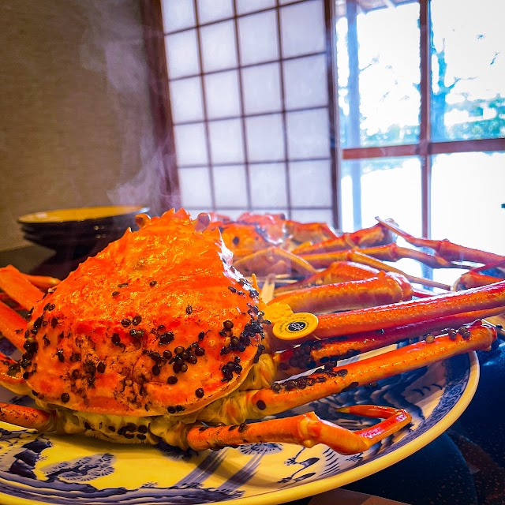
| 営業時間 | 11:30〜13:00（夜は常連向けに17:00〜、原則予約制） |
|---|---|
| 定休日 | 季節により変動（公式サイトの営業カレンダー参照）。越前がには晩秋〜冬の漁期限定、せいこ蟹は漁期のみ |
| 住所 | 福井県坂井市三国町中央２丁目２−２８ |
| 予約 | 可 — ☎ 0776-82-1313 ／ 公式サイト |
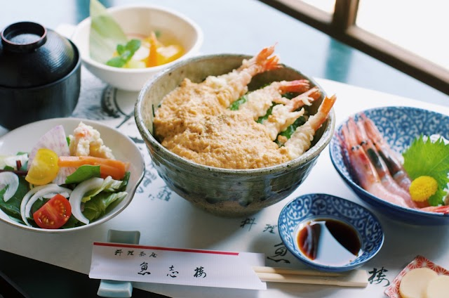
| 営業時間 | 月・水・木・金・土・日 11:30〜14:00, 18:00〜21:00 |
|---|---|
| 定休日 | 火曜 |
| 住所 | 福井県坂井市三国町神明３丁目７−２３ |
| 予約 | 可 — ☎ 0776-82-0141 ／ 公式サイト |
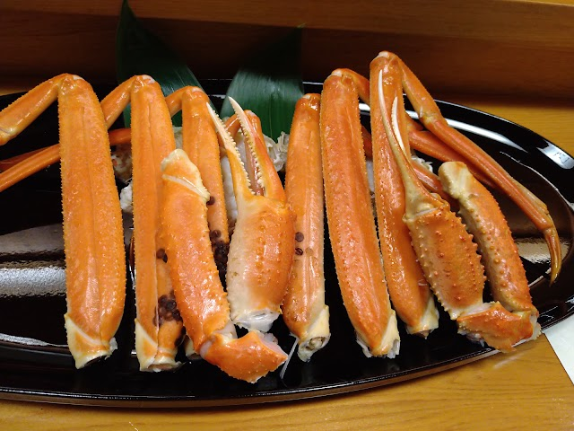
| 営業時間 | 火・水・木・金・土 11:30〜13:30, 18:00〜21:00 ／ 日 11:30〜13:30 |
|---|---|
| 定休日 | 月曜 |
| 住所 | 福井県坂井市三国町新保４５−１−１ |
| 予約 | 可 — ☎ 0120-824-299 ／ 公式サイト |
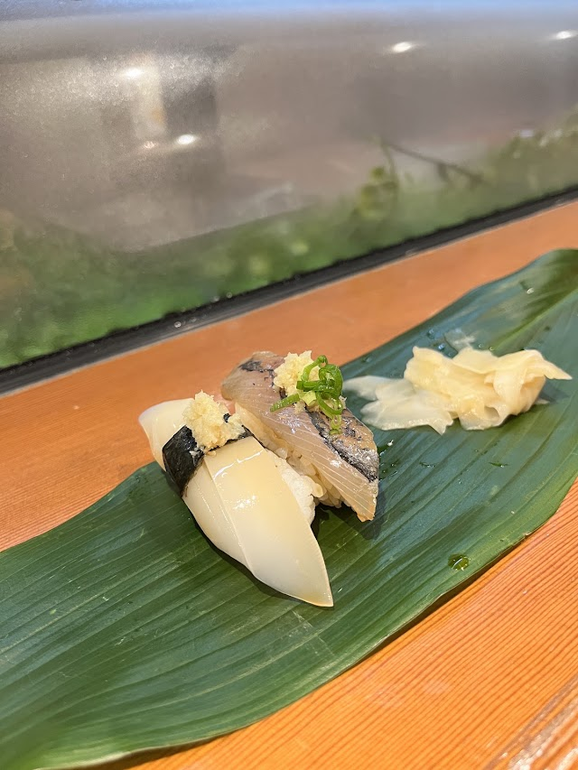
| 営業時間 | 月・水・木・金・土・日 12:00〜14:00, 18:00〜22:00 |
|---|---|
| 定休日 | 火曜 |
| 住所 | 福井県坂井市三国町北本町２丁目１−４５ |
| 予約 | 可 — ☎ 050-5593-1257 ／ 公式サイト |
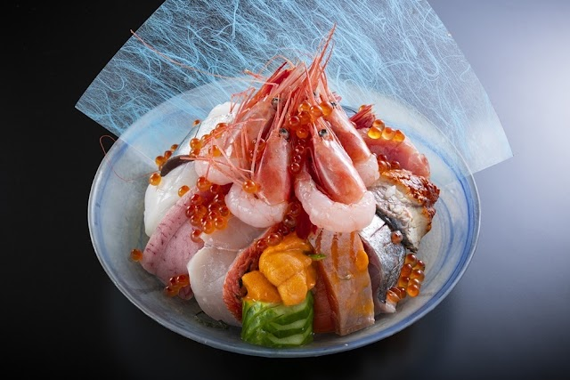
| 営業時間 | 月・水・木・金・土・日 11:30〜13:30, 17:30〜21:00 |
|---|---|
| 定休日 | 火曜 |
| 住所 | 福井県坂井市三国町三国東４丁目１−５ |
| 予約 | 可 — ☎ 0776-82-1827 ／ 公式サイト |
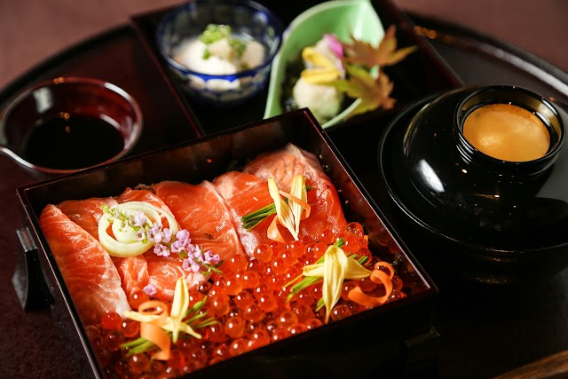
| 営業時間 | 月・水・木・金・土・日 11:00〜15:00 |
|---|---|
| 定休日 | 火曜 |
| 住所 | 福井県坂井市三国町宿３丁目１２−２２ |
| 予約 | 可 — ☎ 0776-43-1977 ／ 公式サイト |
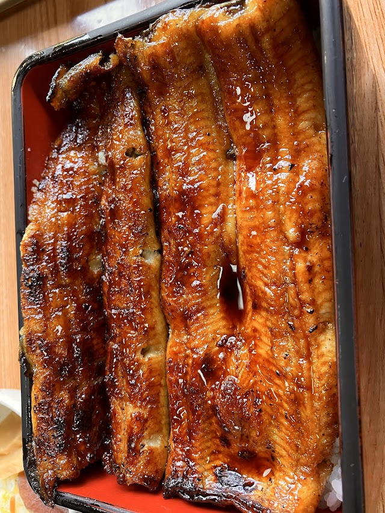
| 営業時間 | 月・火・木・金・土・日 10:00〜14:00 |
|---|---|
| 定休日 | 水曜 |
| 住所 | 福井県坂井市春江町西長田４７−２４−４ |
| 予約 | 可 — ☎ 0776-72-1952 ／ 公式サイト |
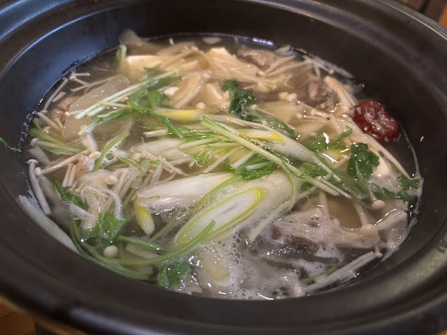
| 営業時間 | 月・火・木・金・土・日 17:00〜23:00 |
|---|---|
| 定休日 | 水曜 |
| 住所 | 福井県坂井市春江町為国幸１１−４ |
| 予約 | 可 — ☎ 0776-51-1267 ／ 公式サイト |
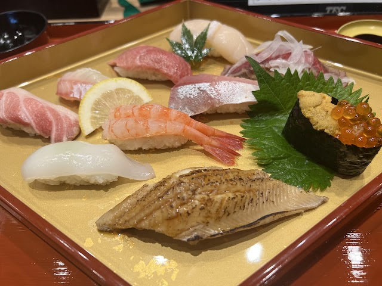
| 営業時間 | 月・火・金 11:30〜14:00 ／ 土 11:00〜14:00, 17:00〜20:00 ／ 日 11:00〜14:00, 17:00〜19:30 |
|---|---|
| 定休日 | 水・木曜 |
| 住所 | 福井県坂井市三国町楽円５３−１−２ |
| 予約 | 可 — ☎ 0776-81-7263 ／ 公式サイト |
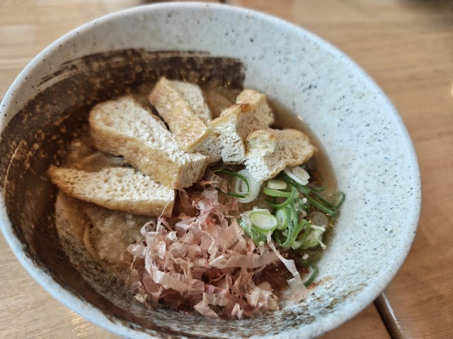
| 営業時間 | 月・木・金 11:00〜15:00, 17:00〜20:30 ／ 火 11:00〜15:00 ／ 土・日 11:00〜20:30 |
|---|---|
| 定休日 | 水曜 |
| 住所 | 福井県坂井市丸岡町里丸岡３丁目１０ |
| 予約 | 可 — ☎ 0776-66-8787 ／ 公式サイト |
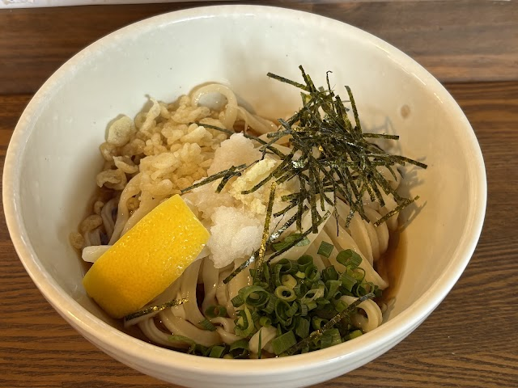
| 営業時間 | 木・金・土・日 11:00〜14:00 |
|---|---|
| 定休日 | 月・火・水曜 |
| 住所 | 福井県坂井市三国町山王３丁目６−６３ |
| 予約 | 要確認 — ☎ 090-7588-4525 |
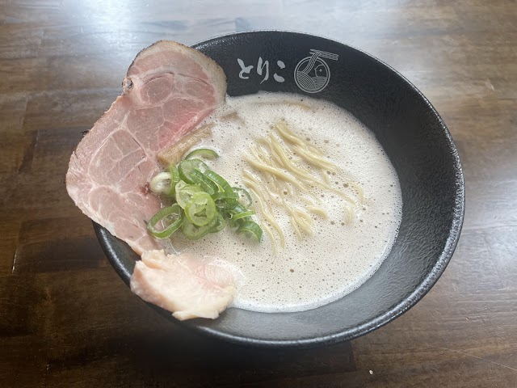
| 営業時間 | 月・木・金・土・日 11:00〜14:00, 17:30〜21:00 ／ 火 11:00〜14:00 |
|---|---|
| 定休日 | 水曜 |
| 住所 | 福井県坂井市春江町江留上昭和１３８ |
| 予約 | 可 — ☎ 0776-97-9523 ／ 公式サイト |
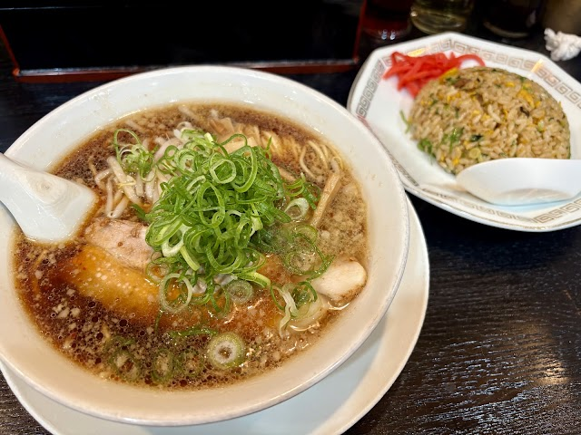
| 営業時間 | 月・火・水・金 11:00〜15:00, 18:00〜22:00 ／ 土・日 11:00〜15:00, 17:00〜22:00 |
|---|---|
| 定休日 | 木曜 |
| 住所 | 福井県坂井市春江町江留下高道１４６ |
| 予約 | 要確認 — ☎ 0776-51-8505 |
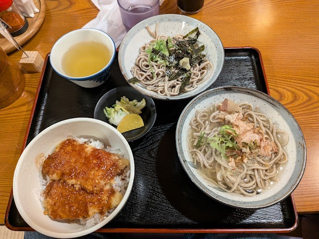
| 営業時間 | 火・水・木 11:20〜14:30, 16:30〜22:30 ／ 金 11:20〜14:20, 16:30〜23:00 ／ 土 11:20〜23:00 ／ 日 11:20〜22:00 |
|---|---|
| 定休日 | 月曜 |
| 住所 | 福井県坂井市丸岡町本町２丁目３６ |
| 予約 | 可 — ☎ 0776-66-0292 ／ 公式サイト |
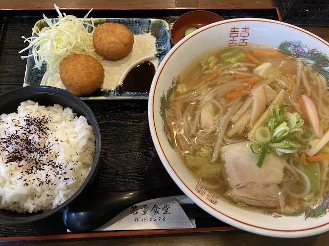
| 営業時間 | 月・水・木・金・土・日 11:00〜14:00, 16:00〜21:00 |
|---|---|
| 定休日 | 火曜 |
| 住所 | 福井県坂井市坂井町若宮１３−１−５０ |
| 予約 | 可 — ☎ 0776-66-2276 |
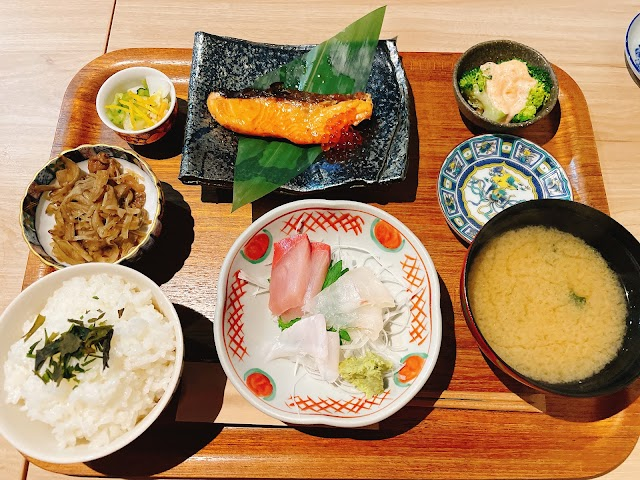
| 営業時間 | 月・火・水・金・土・日 11:00〜14:00, 17:00〜22:00 |
|---|---|
| 定休日 | 木曜 |
| 住所 | 福井県坂井市三国町神明３丁目１−２３ |
| 予約 | 可 — ☎ 0776-76-4055 ／ 公式サイト |
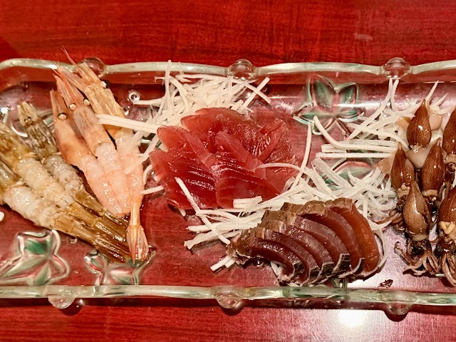
| 営業時間 | 月・火・水・木・金・土・日 17:00〜0:00 |
|---|---|
| 定休日 | なし(要最終確認) |
| 住所 | 福井県坂井市三国町神明１丁目１−２３ |
| 予約 | 可 — ☎ 0776-82-5027 ／ 公式サイト |
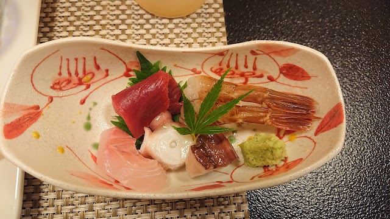
| 営業時間 | 火・水・木・金・土・日 17:30〜22:00 |
|---|---|
| 定休日 | 月曜 |
| 住所 | 福井県坂井市三国町三国東３丁目１２−２１ |
| 予約 | 可 — ☎ 0776-81-3622 |
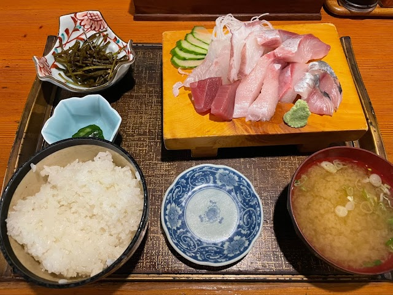
| 営業時間 | 月・火・水・日 11:30〜14:00, 16:00〜22:30 ／ 金・土 11:30〜14:00, 16:00〜23:00 |
|---|---|
| 定休日 | 木曜 |
| 住所 | 福井県坂井市丸岡町一本田３１−１０−１ |
| 予約 | 可 — ☎ 0776-66-0155 ／ 公式サイト |
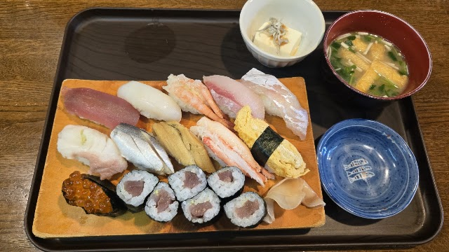
| 営業時間 | 月・火・水・金・土・日 11:00〜14:00, 17:00〜23:00 |
|---|---|
| 定休日 | 木曜 |
| 住所 | 福井県坂井市丸岡町一本田２７−１２−１４ |
| 予約 | 可 — ☎ 0776-67-0011 |
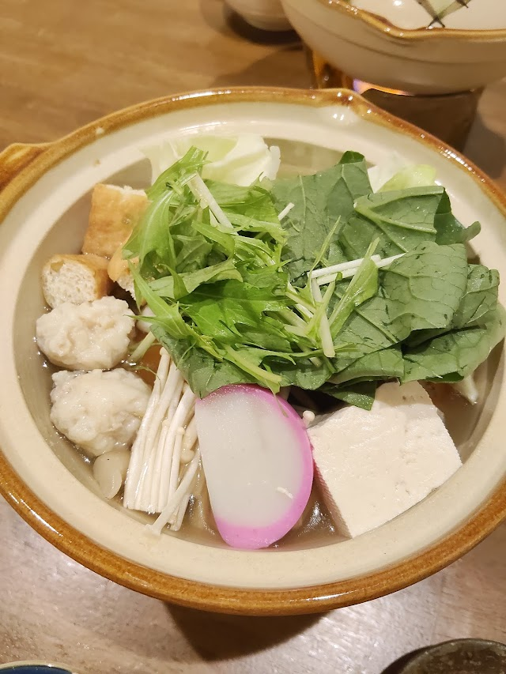
| 営業時間 | 火 17:30〜21:30 ／ 水・木・金・土 11:30〜14:30, 17:30〜21:30 ／ 日 11:30〜14:30 |
|---|---|
| 定休日 | 月曜 |
| 住所 | 福井県坂井市春江町江留下相田５４ |
| 予約 | 要確認 |
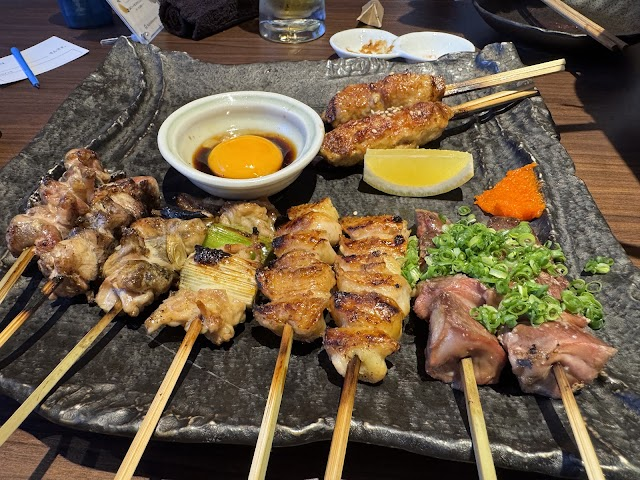
| 営業時間 | 月・水・木・日 17:00〜23:00 ／ 金・土 17:00〜0:00 |
|---|---|
| 定休日 | 火曜 |
| 住所 | 福井県坂井市春江町江留上緑２８−２ |
| 予約 | 可 — ☎ 0776-50-2562 ／ 公式サイト |
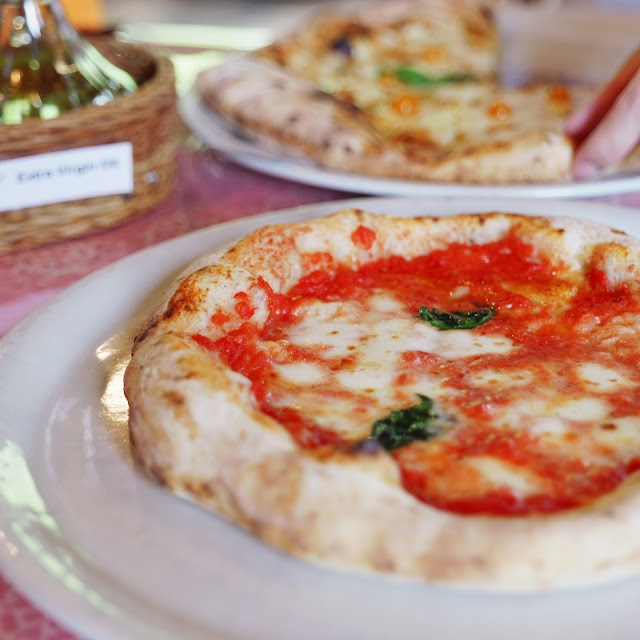
| 営業時間 | 火・水 11:00〜15:00, 17:00〜21:00 ／ 金・土・日 11:00〜15:00, 17:30〜21:00 |
|---|---|
| 定休日 | 月・木曜 |
| 住所 | 福井県坂井市三国町緑ケ丘４丁目１９−２１ |
| 予約 | 可 — ☎ 0776-82-5778 ／ 公式サイト |
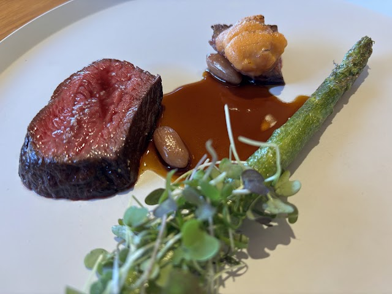
| 営業時間 | 月 11:30〜15:00 ／ 火・水・金・土・日 11:30〜16:00, 17:30〜22:00 |
|---|---|
| 定休日 | 木曜 |
| 住所 | 福井県坂井市三国町崎３１−２５ |
| 予約 | 可 — ☎ 0776-97-8903 ／ 公式サイト |
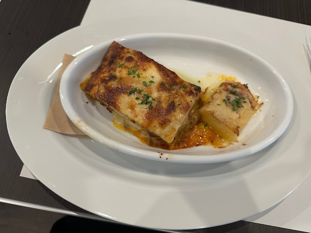
| 営業時間 | 月・火・金・土・日 11:00〜13:30, 17:30〜20:00 |
|---|---|
| 定休日 | 水・木曜 |
| 住所 | 福井県坂井市三国町 南本町４丁目１２−２０ |
| 予約 | 可 — ☎ 0776-97-6302 ／ 公式サイト |
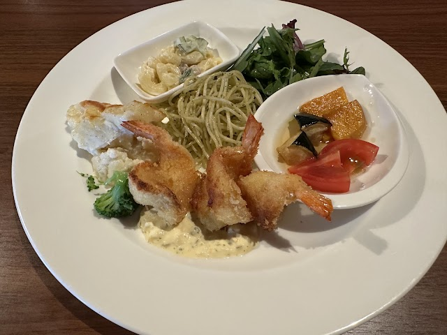
| 営業時間 | 水・木・金・土・日 11:30〜14:00, 17:00〜22:00 |
|---|---|
| 定休日 | 月・火曜 |
| 住所 | 福井県坂井市三国町宿１丁目７−６ 23 駐車場 |
| 予約 | 可 — ☎ 0776-89-1064 ／ 公式サイト |
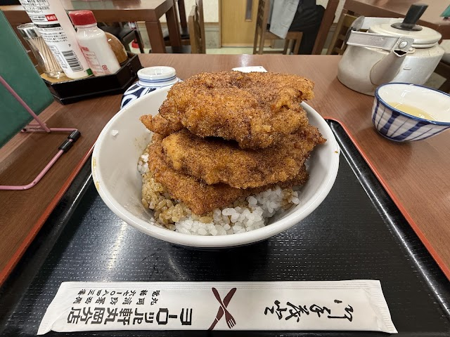
| 営業時間 | 月 11:00〜14:00 ／ 水・木・金・土・日 11:00〜14:00, 17:00〜20:00 |
|---|---|
| 定休日 | 火曜 |
| 住所 | 福井県坂井市丸岡町一本田５−６２ |
| 予約 | 要確認 — ☎ 0776-67-0843 ／ 公式サイト |
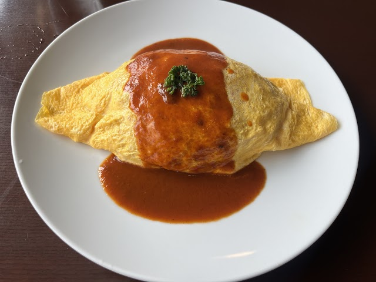
| 営業時間 | 月・水・木・金・土・日 7:00〜15:00 |
|---|---|
| 定休日 | 火曜 |
| 住所 | 福井県坂井市丸岡町玄女１７−１７−１ |
| 予約 | 要確認 — ☎ 0776-66-3323 |
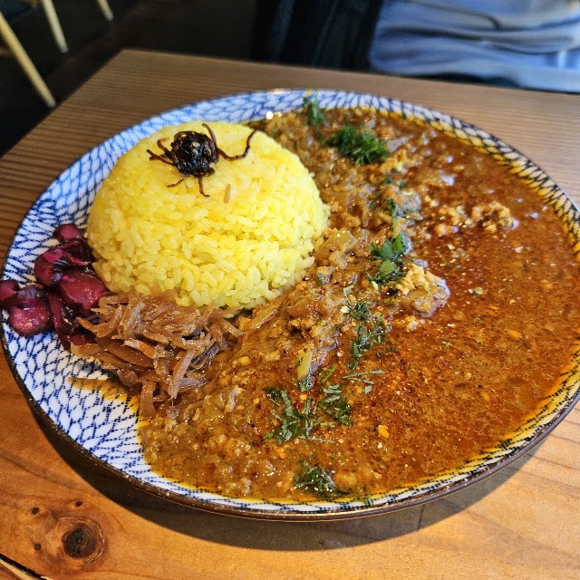
| 営業時間 | 火・水・木・金・土・日 11:30〜14:00 |
|---|---|
| 定休日 | 月曜 |
| 住所 | 福井県坂井市春江町江留下宇和江２３−１ |
| 予約 | 要確認 — ☎ 0776-92-0580 ／ 公式サイト |
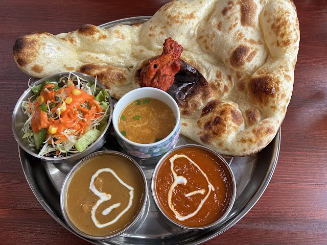
| 営業時間 | 月・火・水・木・金・土・日 11:00〜15:00, 17:00〜22:00 |
|---|---|
| 定休日 | なし(要最終確認) |
| 住所 | 福井県坂井市春江町随応寺２１−３０ |
| 予約 | 要確認 — ☎ 0776-51-4273 |
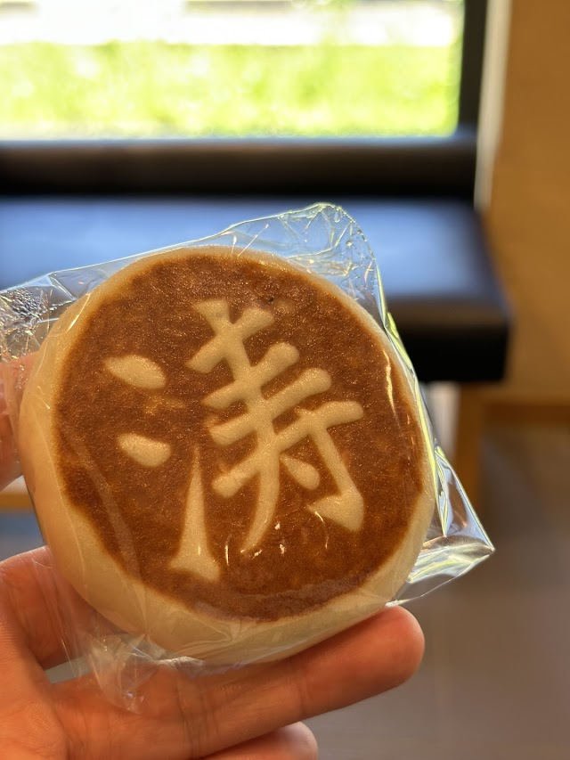
| 営業時間 | 月・水・木・金・土 8:00〜18:00 ／ 日 8:00〜17:00 |
|---|---|
| 定休日 | 火曜 |
| 住所 | 福井県坂井市三国町南本町１丁目１−４８ |
| 予約 | 要確認 — ☎ 0776-82-1332 |
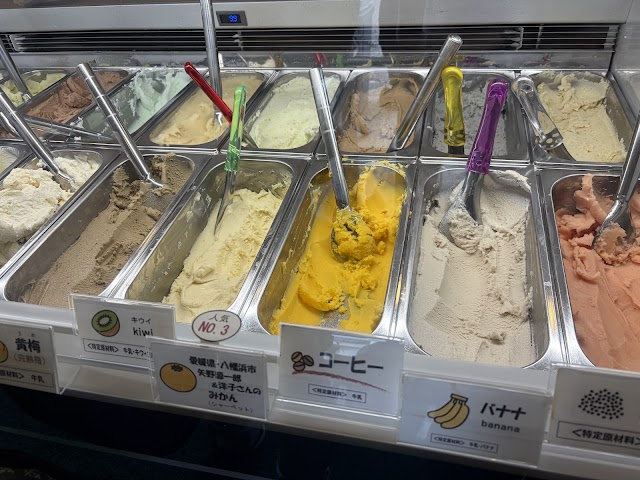
| 営業時間 | 月・火・金・土・日 13:00〜17:00 ／ 木 11:00〜17:00 |
|---|---|
| 定休日 | 水曜 |
| 住所 | 福井県坂井市三国町南本町３丁目４−３４ |
| 予約 | 要確認 — ☎ 0776-81-3225 ／ 公式サイト |
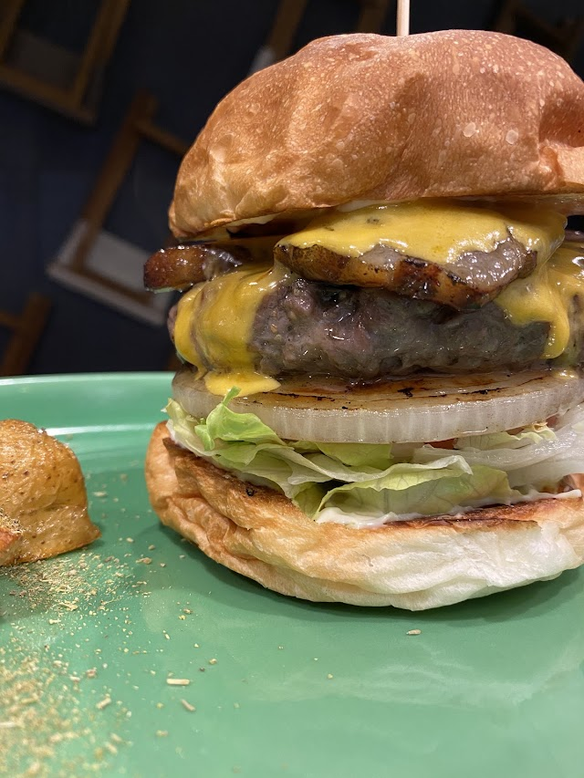
| 営業時間 | 月・火・水・金・土・日 11:00〜19:30 |
|---|---|
| 定休日 | 木曜 |
| 住所 | 福井県坂井市三国町宿２丁目１３−３４ |
| 予約 | 可 — ☎ 0776-89-1223 ／ 公式サイト |
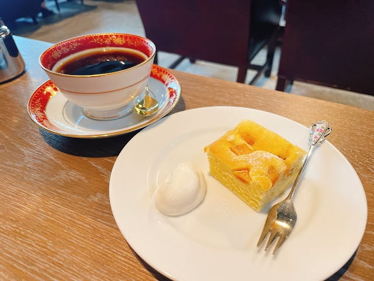
| 営業時間 | 月・水・木・金・土・日 8:00〜17:00 |
|---|---|
| 定休日 | 火曜 |
| 住所 | 福井県坂井市丸岡町堀水12ｰ1 |
| 予約 | 要確認 — ☎ 0776-65-1933 ／ 公式サイト |
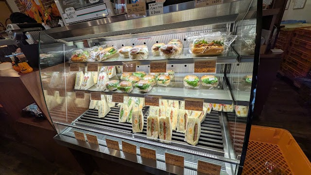
| 営業時間 | 火・水・木・金 7:00〜17:00 ／ 土 6:30〜17:00 |
|---|---|
| 定休日 | 月・日曜 |
| 住所 | 福井県坂井市丸岡町谷町１丁目５ |
| 予約 | 要確認 — ☎ 0776-66-0489 ／ 公式サイト |
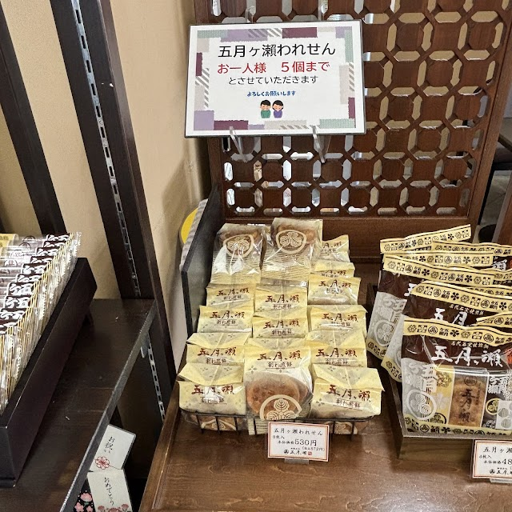
| 営業時間 | 月・火・水・木・金・土・日 9:00〜17:00 |
|---|---|
| 定休日 | なし(要最終確認) |
| 住所 | 福井県坂井市丸岡町舟寄９−１ |
| 予約 | 要確認 — ☎ 0776-67-5600 ／ 公式サイト |
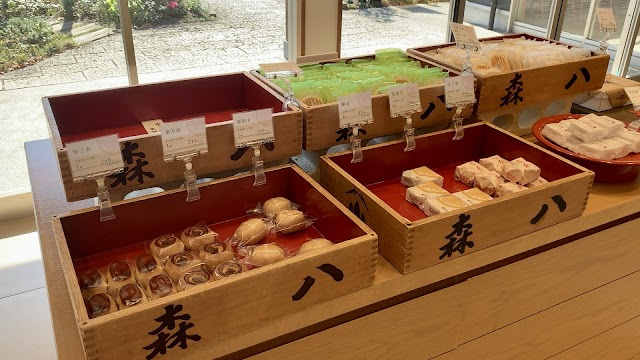
| 営業時間 | 火・水・木・金・土・日 9:30〜18:00 |
|---|---|
| 定休日 | 月曜 |
| 住所 | 福井県坂井市春江町江留下高道４３−１ |
| 予約 | 要確認 — ☎ 0776-51-6008 ／ 公式サイト |
本ガイドは個人利用目的で作成。掲載情報は2026年8月時点の調査に基づく。写真出典: Google Maps投稿写真(©各投稿者/Google)。